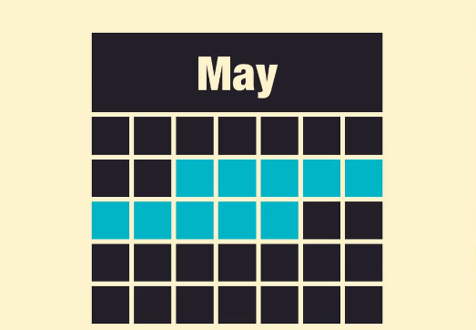
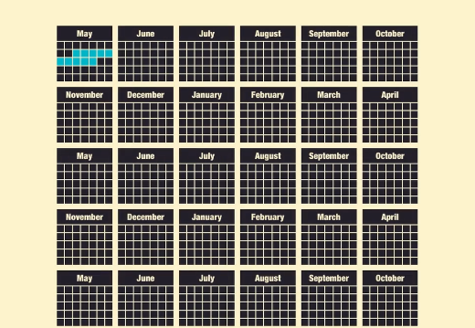

History of JavaScript
August 2014
The creation of JavaScript
first created in 1995

It was created for two weeks
Compare this to the creation of Closure
Similarities to Java

JavaScript is Lisp in Java's (or C's) clothing
JavaScript: The World's Most Misunderstood Programming Language
Browser War I
The late 90's
IE vs Netscape
Browser sniffing
IE eventually won, establishing IE6 as the most dominant browser in the history

IE6 domination
1999 - 2005
- IE6 was created in 2001 and then Microsoft decided that it will be the last browser ever created
- Web development was table layouts, browser sniffings and hacks
- The rise of Web Standards
- Proprietary technologies
- The rise of CSS (Fear of Style Sheets (article from 1999))
- The first XMLHttpRequest implementation
- Mozilla Foundation and the release of Firefox 1.0 (November 9, 2004)
Browser War II
The battle for market share and better web
Innovations vs the status quo

The "Stop IE6" jokes


- IE6 lost a lot of market share
- The web standards movement eventually won
- Microsoft was forced to release IE7 (October 2006)
IE6, however, survived by its descendants IE7 and IE8, torturing web developers for the time being.
Still, the web was more about CSS at that point rather than JavaScript
Google created Gmail
2005
And showed the world how AJAX can be used
The jQuery era
2006 - 2011 (?)
$("#myContainer .myElements > p").css("display", "none");

May 8, 2008

The MV* era
2010 - present
- Backbone.js was released in October 2010
- KnockoutJS was released in July 2010, giving popularity to data-binding and MVVM pattern
- Later on Google created AngularJS
Today, the example TODO application is written in more than 35 JavaScript MV* frameworks
"The alternatives"
- In an attempt to escape from JavaScript, many people tried to invent languages that compile to it
- Today, more than 200 programming languages compile to JavaScript

Created in December 13, 2009

In October 2011 Google released Dart
It is a "structured language for web programming"
But it was destined to die short after

In October 2012 Microsoft released TypeScript
Do you use a language that compiles to JavaScript? (Jan 2013 survey)
- Yes - 27%
- No - 71%
Which compile-to-JavaScript language do you use, if any? (Jan 2013 survey)
- CoffeeScript - 82%
- TypeScript - 14%
- Dart - 4%
- ClosureScript - 4%
- a CoffeeScript dialect - 2%
- ...
HTML5

w3c and WHATWG
- The road to the illusion - from HTML 4.01 to XML
- The rebellion
- 4 June 2004 - The announcement of WHATWG
- Web Forms 2.0 and Web Apps 1.0
- The unified specification - HTML5
- 10 April 2007 - w3c adopted the HTML5 specification
HTML5 is 10% about HTML and 90% about JavaScript
Browser War III
It's about who's more compatible to the standards
Meanwhile developers use progressive enhancement or polyfills
ASM.js
JavaScript is everywhere
2014